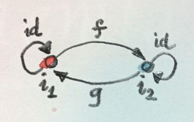
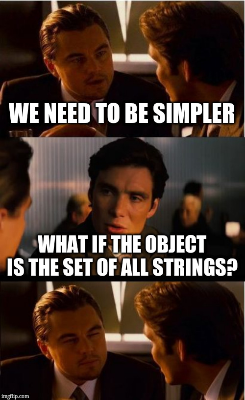
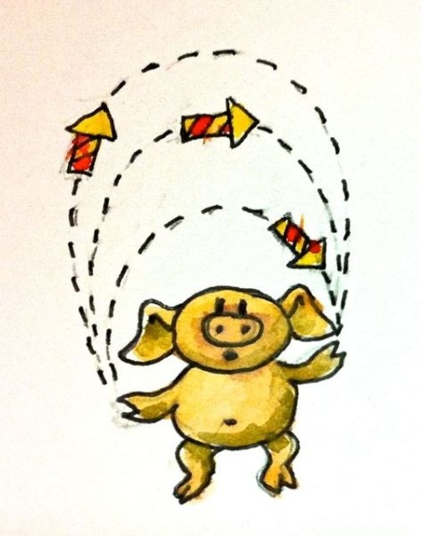
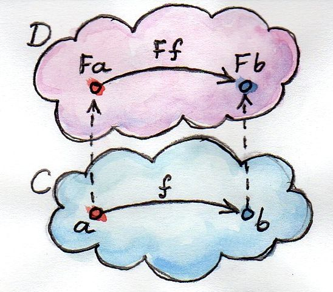
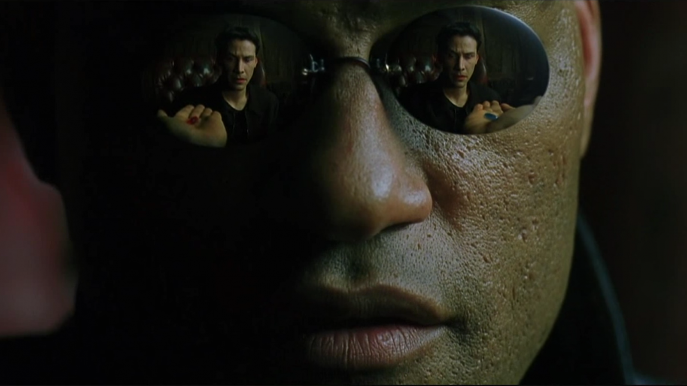

<!DOCTYPE html>
<html lang="en">
  <head>
    <meta charset="utf-8" />
    <meta name="viewport" content="width=device-width, initial-scale=1.0, maximum-scale=1.0, user-scalable=no" />

    <title>Category Presentation</title>
    <link rel="stylesheet" href="./css/reveal.css" />
    <link rel="stylesheet" href="./css/theme/black.css" id="theme" />
    <link rel="stylesheet" href="./css/highlight/zenburn.css" />
    <link rel="stylesheet" href="./css/print/paper.css" type="text/css" media="print" />
    <link rel="stylesheet" href="./assets/custom.css" />

  </head>
  <body>
    <div class="reveal">
      <div class="slides"><section  data-markdown><script type="text/template">
<link rel="stylesheet" href="https://use.fontawesome.com/releases/v5.0.13/css/all.css" integrity="sha384-DNOHZ68U8hZfKXOrtjWvjxusGo9WQnrNx2sqG0tfsghAvtVlRW3tvkXWZh58N9jp" crossorigin="anonymous">
<h1>Category Theory 101</h1>
</script></section><section  data-markdown><script type="text/template">
This whole presentation was shamelessly stolen from B. Milewski and his PDF "Category Theory for Programmers".
</script></section><section  data-markdown><script type="text/template">
Programming is mostly composition. Composing functions, objects, data, modules, and, in the end, programs.

A category is made of two things, _objects_ and _morphisms_. And there must be 3 properties :
```

∀f,g ∈ C, f∘g ∈ C                       < -- Composition
Identity ∈ C                            < -- Identity
∀f,g,h ∈ C, f∘(g∘h) = (f∘g)∘h           < -- Associativity


```
</script></section><section  data-markdown><script type="text/template">
<small>

- Specifics about objects are irrelevant
- Only the shape of a category is interesting

</small>
</script></section><section  data-markdown><script type="text/template">

</script></section><section  data-markdown><script type="text/template">
## Examples

- No object
- A graph with one point and one arrow
- An order. A relation that is like ≤ on any set.
- Monoid (set with append and empty)
</script></section><section  data-markdown><script type="text/template">
In order to make append an arrow, we consider a function that will append "a", starting with the empty string.

```
[] --( +a )--> [a] --( +a )-> [aa] --( +a )--> [aaa] ...
```

Adding in identity, we have a category!
</script></section><section  data-markdown><script type="text/template">

</script></section><section  data-markdown><script type="text/template">

</script></section><section  data-markdown><script type="text/template">
#### Back to programming

Let's define an algebra on types.
</script></section><section  data-markdown><script type="text/template">
Product types :
```
type Pair = (a, b)
let neutral = ()
```
</script></section><section  data-markdown><script type="text/template">
Sum types :
```
type Either = Left a | Right b
let neutral = Void
```
</script></section><section  data-markdown><script type="text/template">
We can now make analogies :
```
Pair ~ *
() ~ 1
Either ~ +
Void ~ 0
```
</script></section><section  data-markdown><script type="text/template">
Let's go deeper :
```
1 + 1 ~ Either () () ~ Bool
1 * 0 ~ ((), Void) ~ Void
a * (b + c) ~ (a, Either b c) 
            ~ Either (a, b) (a, c) ~ a * b + a * c
```
</script></section><section  data-markdown><script type="text/template">
```
prodToSum : (a, Either b c) -> Either (a, b) (a, c)
prodToSum =
    | (a, Left b)  -> Left a b
    | (a, Right c) -> Right a c

sumToProd : Either (a, b) (a, c)
sumToProd =
    | Left (a, b)  -> (a, Left b)
    | Right (a, c) -> (a, Right c)
```
</script></section><section  data-markdown><script type="text/template">
<small>
To go even deeper : Curry-Howard isomorphism
</small>

And with all this, we can define more Monoids!
</script></section><section  data-markdown><script type="text/template">
We now have our programmer category :
- Objects are basic types
- Arrows are functions
- Identity is trivial
</script></section><section  data-markdown><script type="text/template">
<small>
Now let's transform Categories :
</small>

## Functors
</script></section><section  data-markdown><script type="text/template">
Functors are functions that preserve the structure of the Category.


</script></section><section  data-markdown><script type="text/template">
And in real life :

A functor is a type with a `map` function.

- List is a functor
- Option is a functor (Maybe in Haskell)

```
map : (a -> b) -> a List -> b List
```
</script></section><section  data-markdown><script type="text/template">
In Haskell : typeclasses

In OCaml : module types

```
Maybe = Nothing | Just a

instance Functor Maybe where
    fmap _ Nothing = Nothing
    fmap f (Just x) = Just (f x)
```
</script></section><section  data-markdown><script type="text/template">
Functors also form a category...


</script></section><section  data-markdown><script type="text/template">
<small>
And that is how you conclude a presentation about Category Theory without talking about Monads!
</small>
</script></section><section  data-markdown><script type="text/template">
https://bartoszmilewski.com/2014/10/28/category-theory-for-programmers-the-preface/


</script></section></div>
    </div>

    <script src="./js/reveal.js"></script>

    <script>
      function extend() {
        var target = {};
        for (var i = 0; i < arguments.length; i++) {
          var source = arguments[i];
          for (var key in source) {
            if (source.hasOwnProperty(key)) {
              target[key] = source[key];
            }
          }
        }
        return target;
      }

      // Optional libraries used to extend on reveal.js
      var deps = [
        { src: './plugin/markdown/marked.js', condition: function() { return !!document.querySelector('[data-markdown]'); } },
        { src: './plugin/markdown/markdown.js', condition: function() { return !!document.querySelector('[data-markdown]'); } },
        { src: './plugin/highlight/highlight.js', async: true, callback: function() { hljs.initHighlightingOnLoad(); } },
        { src: './plugin/zoom-js/zoom.js', async: true },
        { src: './plugin/notes/notes.js', async: true },
        { src: './plugin/math/math.js', async: true }
      ];

      // default options to init reveal.js
      var defaultOptions = {
        controls: true,
        progress: true,
        history: true,
        center: true,
        transition: 'default', // none/fade/slide/convex/concave/zoom
        dependencies: deps
      };

      // options from URL query string
      var queryOptions = Reveal.getQueryHash() || {};

      var options = extend(defaultOptions, {"transition":"none","slideNumber":true}, queryOptions);
    </script>


    <script>
      Reveal.initialize(options);
    </script>
  </body>
</html>
